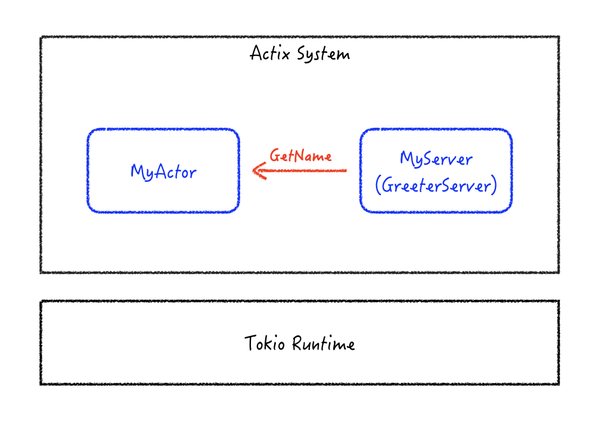

Rust로 gRPC로 외부와 통신하는 Actix 기반 application을 작성하는 방법을 알아봅니다. gRPC Server는 Tonic을 사용해 구현합니다. Tonic과 Actix는 둘 다 tokio 기반 application으로, tokio Runtime 위에서 동작합니다. 같은 tokio Runtime에 gRPC Server와 Actor System을 실행시켜 보겠습니다.
Tonic을 사용해 gRPC Server 시작하기#
Tonic을 사용하면 다음과 같은 간단한 Server 실행 코드를 포함한 Async Block(Future)을 Tokio Runtime에서 실행하여 gRPC Server를 시작할 수 있습니다. 아래 코드는 Tonic repo 내 helloworld exmaple에서 tonic::main 매크로를 풀어 쓴 것입니다.
1
2
3
4
5
6
7
8
9
10
11
12
|
fn main() -> Result<(), Box<dyn std::error::Error>> {
tokio::runtime::Runtime::new().unwrap().block_on(async {
let addr = "[::1]:50051".parse().unwrap();
let greeter = MyGreeter::default();
Server::builder()
.add_service(GreeterServer::new(greeter))
.serve(addr)
.await?;
Ok(())
})
}
|
Actix System#
Actix의 System은 Per-thread Async Runtime Manager입니다. Actix System을 생성하면 Tokio Runtime과 이 위에서 Actor들이 실행될 수 있는 환경이 생성됩니다.
다음은 Actix System을 시작하고 Actor를 시작, 생성한 Actor에게 message를 보내는 코드입니다. Actix repo 내 ping exmaple을 가져왔습니다.
1
2
3
4
5
6
7
8
9
|
fn main() {
let system = actix::System::new();
system.block_on(async move {
let addr = MyActor { count: 10 }.start();
let res = addr.send(Ping(10)).await;
println!("RESULT: {}", res.unwrap() == 20);
});
system.run().unwrap();
}
|
위 코드는 block_on을 통해 필요한 Actor를 생성하고 메시지를 보냅니다. 이는 바로 실행되고, 실행 완료될 때 까지 이 thread는 block 됩니다.
system.run()은 System의 event loop을 시작하는 코드입니다. 위의 단순한 예제에서는 Actor 를 시작하고 Actor에 메시지를 보내는 동작이 block_on에서 모두 실행되고 있어 event loop 시작이 크게 의미가 없습니다. 하지만 특정 요청에 의해 Actor 동작이 실행되는 경우(Actor가 다른 Actor에게 연속적으로 message를 보내거나 gRPC 와 같은 외부 요청에 응답해야 하는 경우 등)에는 event loop 이 시작 되어야 실행될 수 있습니다.
Tonic Server를 실행시키는 Actix Actor 만들기#
이제 위에서 작성한 Greeter Server를 Actix Actor로 만드는 간단한 예제를 작성해 봅니다. MyGreeter가 Hello gRPC 응답 메시지를 보낼 때 MyActor로부터 name을 받아 응답 메시지를 만들도록 합니다.

다음 코드에는 두 개의 Actor가 있습니다.
MyActor는 이름(name)을 갖고 있고, GetName message에 응답합니다.
MyServer는 gRPC Service들을 시작합니다.
Actor가 시작 되면 started가 불리므로, MyServer의 started 함수에서 gRPC Service를 시작합니다. 이 started 함수는 async 함수가 아니므로 바로 Server를 시작할 수 없습니다. 따라서 Server를 시작하는 Future를 만들어 spawn 합니다. Spawn 된 Future는 Actix System의 event loop가 시작되면(run) 시작될 수 있습니다.
1
2
3
4
5
6
7
8
9
10
11
12
13
14
15
16
17
18
19
20
21
22
23
24
25
26
27
28
29
30
31
32
33
34
35
36
37
38
39
40
41
42
43
44
45
46
47
48
49
50
51
52
53
54
55
56
57
58
59
60
61
62
63
64
65
66
67
68
69
70
71
72
73
74
75
76
77
78
79
80
81
82
83
84
85
86
87
88
89
90
|
use actix::prelude::*;
use hello_world::greeter_server::{Greeter, GreeterServer};
use hello_world::{HelloReply, HelloRequest};
use tonic::{transport::Server, Request, Response, Status};
pub mod hello_world {
tonic::include_proto!("helloworld");
}
struct MyServer {
addr: String,
name: Addr<MyActor>,
}
impl Actor for MyServer {
type Context = Context<Self>;
fn started(&mut self, ctx: &mut Self::Context) {
let greeter = MyGreeter {
name: self.name.clone(),
};
let addr = self.addr.parse().unwrap();
let start_server_fut = async move {
println!("Start grpc server: addr {}", addr);
Server::builder()
.add_service(GreeterServer::new(greeter))
.serve(addr)
.await.unwrap();
};
let start_server_actor = start_server_fut.into_actor(self);
ctx.spawn(start_server_actor);
}
}
pub struct MyGreeter {
name: Addr<MyActor>,
}
#[tonic::async_trait]
impl Greeter for MyGreeter {
async fn say_hello(
&self,
request: Request<HelloRequest>,
) -> Result<Response<HelloReply>, Status> {
println!("Got a request from {:?}", request.remote_addr());
let response = self.name.send(GetName::default()).await.unwrap();
let reply = hello_world::HelloReply {
message: format!("Hello {}!, from {:?}",
request.into_inner().name, response),
};
Ok(Response::new(reply))
}
}
#[derive(Default, Message)]
#[rtype(result = "String")]
struct GetName;
struct MyActor{
name: String,
}
impl Actor for MyActor {
type Context = Context<Self>;
}
impl Handler<GetName> for MyActor {
type Result = String;
fn handle(&mut self, msg: GetName, ctx: &mut Self::Context) -> Self::Result {
self.name.clone()
}
}
fn main() {
let system = System::new();
system.block_on(async {
let actor_name = MyActor {
name: String::from("MY_ACTOR"),
}.start();
MyServer {
addr: "[::1]:50051".to_string(),
name: actor_name,
}
.start();
});
system.run().unwrap();
}
|
Application을 실행한 후 gRPC message를 보낸 결과는 다음과 같습니다.
Server 출력
Start grpc server: addr [::1]:50051
Got a request from Some([::1]:50408)
Client가 받은 응답
RESPONSE=Response { metadata: MetadataMap { headers: {"content-type": "application/grpc", "date": "Sat, 13 Aug 2022 16:46:00 GMT", "grpc-status": "0"} }, message: HelloReply { message: "Hello Tonic!, from \"MY_ACTOR\"" }, extensions: Extensions }
References#
https://github.com/hyperium/tonic
https://docs.rs/tokio/0.1.22/tokio/runtime
https://docs.rs/actix/latest/actix/struct.System.html